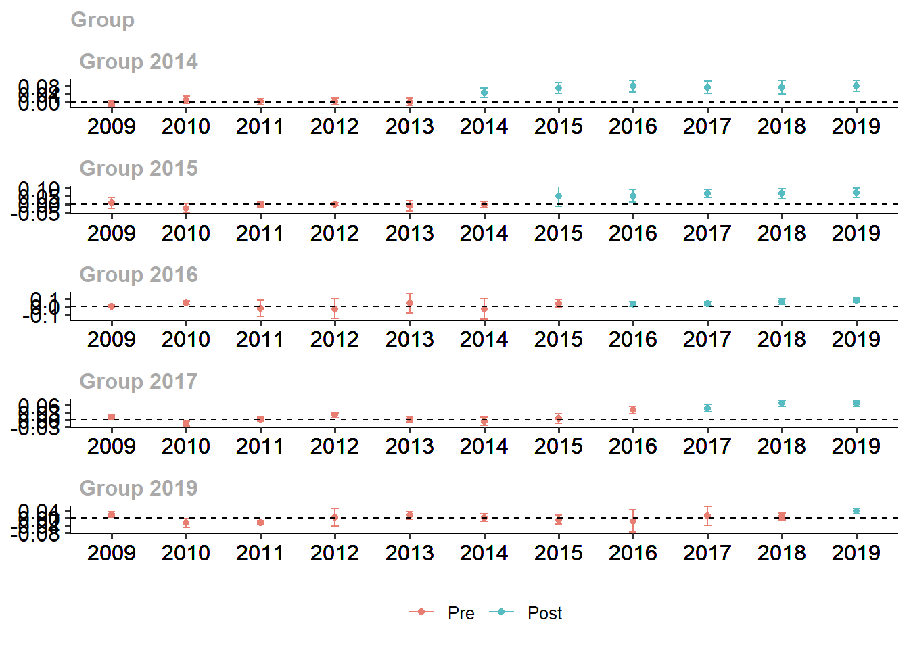
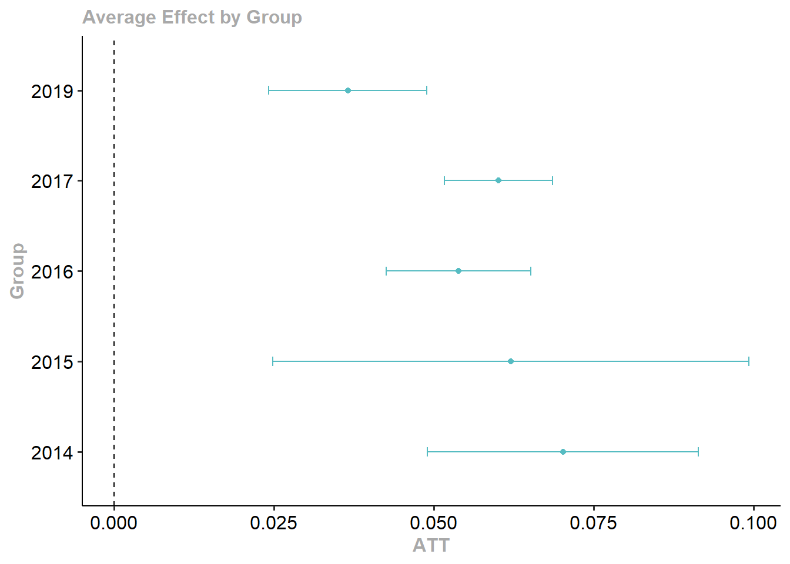

wd <- divorce %>%
filter(year>=1964 & year<=1996 & sex==2) %>%
mutate(suicide_rate=suicide*1000000/(stpop*fshare),
year=as.numeric(year),
divyear = ifelse(divyear>1996, Inf, divyear),
unilateral=ifelse(year>divyear, 1, 0))Respuestas a la tarea 3
Respuestas
Pregunta 1
Stevenson, B. & Wolfers, J. (2006)1 estudian los efectos de la introducción de leyes que permiten el divorcio unilateral en los Estados Unidos. La librería bacondecomp incluye los datos usados en dicho artículo (debe instalar y cargar la librería). Usaremos los datos de 1964 a 1996 para mostrar cómo impactan las leyes de divorcio express (unilateral) a la tasa de suicidios en mujeres.
Al correr el pedazo de código anterior, obtendrá un objeto de datos wd en donde la variable de impacto es la tasa de suicidios en mujeres, suicide_rate, st identifica a los estados, year identifica a los años y divyear es el año en que se introdujo la legislación del divorcio unilateral. La última fila del código crea el indicador de tratamiento unilaterial, que toma el valor de 1 para los estados tratados en los periodos post tratamiento.
[5 puntos] Presente una tabla donde muestre el número de estados que es tratado en cada periodo del panel. ¿Cuántos estados son nunca tratados? ¿Cuántos estados son siempre tratados?
Si hacemos un tabulado de divyear para un año fijo, notamos cuántos estados se vuelven tratados en cada año. Solo 5 estados son nunca tratados. Por otro lado, como el panel comienza en 1964 y hay 9 estados tratados en 1950, estos 9 estados son siempre tratados.
table(filter(wd, year==1996)$divyear)1950 1969 1970 1971 1972 1973 1974 1975 1976 1977 1980 1984 1985 Inf 9 2 2 7 3 11 3 2 1 3 1 1 1 5[5 puntos] Como punto de partida, estime el efecto del tratamiento sobre suicide_rate usando efectos fijos por estado y año (TWFE) y empleando una librería específica para efectos fijos, como felm. Tome en cuenta la agrupación de los errores. Interprete sus resultados.
Usando felm podemos incorporar ya el nivel de agrupación de los errores:
summary(felm(suicide_rate ~ unilateral | st + year | 0 | st, data = wd))Call: felm(formula = suicide_rate ~ unilateral | st + year | 0 | st, data = wd) Residuals: Min 1Q Median 3Q Max -37.517 -6.157 -0.141 5.577 57.004 Coefficients: Estimate Cluster s.e. t value Pr(>|t|) unilateral -3.777 2.201 -1.716 0.0923 . --- Signif. codes: 0 '***' 0.001 '**' 0.01 '*' 0.05 '.' 0.1 ' ' 1 Residual standard error: 10.85 on 1599 degrees of freedom Multiple R-squared(full model): 0.6844 Adjusted R-squared: 0.668 Multiple R-squared(proj model): 0.007963 Adjusted R-squared: -0.04353 F-statistic(full model, *iid*):41.77 on 83 and 1599 DF, p-value: < 2.2e-16 F-statistic(proj model): 2.945 on 1 and 50 DF, p-value: 0.09231[5 puntos] Compruebe que puede obtener el mismo resultado con una regresión lineal usando el paquete lm e incluyendo, además de la variable de tratamiento, dummies de estado y de año.
Estimamos con dummies:
summary(m1 <- lm(suicide_rate ~ unilateral + factor(st) + factor(year), data = wd))$coef[1:2,1:3]Estimate Std. Error t value (Intercept) 56.732642 2.468251 22.984953 unilateral -3.776552 1.054148 -3.582562Luego estimamos errores agrupados:
modelsummary(list(m1), output = 'gt', vcov=clubSandwich::vcovCR(m1, type='CR1', cluster=wd$st), coef_map = "unilateral", gof_map = "nobs")(1) unilateral -3.777 (2.200) Num.Obs. 1683 Obtenemos los mismos coeficientes. Aquí también podrán volver a comprobar la importancia de usar errores agrupados. El error agrupado es más de dos veces más grande que el error clásico.
[10 puntos] Ahora muestre que podemos obtener el coeficiente de TWFE a partir de una regresión bivariada entre la tasa de suicidios y unilateral, una vez purgada por efectos fijos. Para ello, primero estime una regresión de unilateral en función de los efectos fijos. Obtenga la predicción y luego defina una nueva variable igual a la diferencia entre unilateral y la predicción que acaba de obtener. Finalmente, obtenga el coeficiente de TWFE con una regresión de la tasa de suicidios en función de la diferencia antes definida.
Corremos la primera regresión para purgar los efectos fijos:
d1 <- lm(unilateral ~ factor(st) + factor(year), data = wd)Definimos la nueva variable:
wd <- wd %>% mutate(unilateral_hat = unilateral-predict(d1))Y finalmente estimamos:
summary(m2 <- lm(suicide_rate ~ unilateral_hat, data = wd))$coef[1:2,1:3]Estimate Std. Error t value (Intercept) 54.422503 0.4585884 118.673960 unilateral_hat -3.776552 1.8276582 -2.066334Obtenemos el mismo coeficiente. Frisch–Waugh–Lovell tenían razón.
[10 puntos] Realice la descomposición de Goodman-Bacon (2021). Construya un gráfico donde muestre en el eje \(x\) el peso otorgado a cada comparación 2x2 que el estimador de TWFE realiza mecánicamente y en el eje \(y\) el efecto estimado correspondiente a cada comparación. Interprete el gráfico obtenido.
Como vimos en laboratorio, la descomposición de Bacon se puede obtener con la función bacon:
#Goodman-Bacon decomposition df_bacon <- bacon(suicide_rate ~ unilateral, data = wd, id_var = "st", time_var = "year")type weight avg_est 1 Earlier vs Later Treated 0.11558 0.13489 2 Later vs Always Treated 0.41990 -6.95245 3 Later vs Earlier Treated 0.23125 2.33743 4 Treated vs Untreated 0.23328 -6.05881coef_bacon <- sum(df_bacon$estimate * df_bacon$weight) print(paste("Suma ponderada de la descomposición =", round(coef_bacon, 4)))[1] "Suma ponderada de la descomposición = -3.7766"twfe <- felm(suicide_rate ~ unilateral | st + year | 0 | st, data = wd) #Gráfico---- df_bacon %>% ggplot(aes(x=weight, y=estimate, shape=type)) + geom_point() + geom_hline(yintercept = round(twfe$coefficients, 4))Las comparaciones que más pesan en el estimador de efectos fijos son las de estados tratados con los que siempre estuvieron tratados en el panel, recibiendo dos de esas comparaciones alrededor de 13 y el 7% del peso (los dos triángulos más hacia la derecha). otra comparación que recibe alrededor de 7% del peso es la de los tratados con los nunca tratados (cruz más hacia la derecha). En total, las comparaciones con los estados que iniciaron siendo tratados se llevan el 42% del peso. Las comparaciones entre los tratados tarde y los tratados temprano también reciben un peso alto de 23%.
[10 puntos] Implemente el estimador de Callaway & Sant’Anna (2021) para estimar los efectos del tratamiento específicos para cada cohorte, usando el paquete did. Utilice como grupo de comparación los estados no tratados aún. La columna stid es un identificador numérico de los estados (lo requerirá cuando use att_gt del paquete did).
atts_nyt <- att_gt(yname = "suicide_rate", tname = "year", idname = "stid", gname = "divyear", data = wd, control_group = "notyettreated", est_method = 'reg', bstrap = TRUE, biters = 1000, print_details = FALSE, panel = TRUE) summary(atts_nyt)Call: att_gt(yname = "suicide_rate", tname = "year", idname = "stid", gname = "divyear", data = wd, panel = TRUE, control_group = "notyettreated", bstrap = TRUE, biters = 1000, est_method = "reg", print_details = FALSE) Reference: Callaway, Brantly and Pedro H.C. Sant'Anna. "Difference-in-Differences with Multiple Time Periods." Journal of Econometrics, Vol. 225, No. 2, pp. 200-230, 2021. <https://doi.org/10.1016/j.jeconom.2020.12.001>, <https://arxiv.org/abs/1803.09015> Group-Time Average Treatment Effects: Group Time ATT(g,t) Std. Error [95% Simult. Conf. Band] 1969 1965 -1.9053 4.7756 -15.6583 11.8477 1969 1966 4.5124 6.4271 -13.9966 23.0215 1969 1967 0.5622 4.9744 -13.7632 14.8877 1969 1968 5.1789 2.8015 -2.8888 13.2467 1969 1969 -0.7447 4.7173 -14.3299 12.8406 1969 1970 -10.2717 7.7434 -32.5716 12.0281 1969 1971 -12.3880 7.2451 -33.2529 8.4770 1969 1972 -4.1259 3.5371 -14.3124 6.0605 1969 1973 1.4524 6.6722 -17.7626 20.6673 1969 1974 -1.4022 4.7125 -14.9736 12.1691 1969 1975 -0.9265 4.0252 -12.5185 10.6654 1969 1976 -12.7344 6.6487 -31.8817 6.4129 1969 1977 -2.3415 9.2180 -28.8881 24.2051 1969 1978 -11.4247 7.3763 -32.6675 9.8181 1969 1979 -6.0427 8.4655 -30.4221 18.3367 1969 1980 -7.9345 5.3933 -23.4666 7.5975 1969 1981 -1.7430 9.7434 -29.8026 26.3166 1969 1982 -6.7020 8.1535 -30.1831 16.7790 1969 1983 4.7154 10.2482 -24.7980 34.2288 1969 1984 -9.5175 12.2214 -44.7134 25.6784 1969 1985 5.9598 17.4902 -44.4094 56.3290 1969 1986 -8.5962 12.8980 -45.7405 28.5481 1969 1987 -8.6897 7.7323 -30.9575 13.5781 1969 1988 -11.9815 8.1718 -35.5150 11.5520 1969 1989 -5.9781 14.9263 -48.9638 37.0077 1969 1990 -7.7327 11.0008 -39.4135 23.9481 1969 1991 -14.7659 11.5556 -48.0445 18.5127 1969 1992 -6.6956 6.5059 -25.4316 12.0404 1969 1993 0.5290 12.7587 -36.2143 37.2722 1969 1994 -6.1575 16.2005 -52.8128 40.4977 1969 1995 -6.7870 16.3071 -53.7490 40.1751 1969 1996 3.0338 13.4027 -35.5641 41.6317 1970 1965 2.4919 3.3647 -7.1978 12.1817 1970 1966 1.8500 3.2855 -7.6119 11.3119 1970 1967 -2.0438 4.4811 -14.9487 10.8612 1970 1968 -3.7538 10.3830 -33.6554 26.1478 1970 1969 9.0725 3.9055 -2.1747 20.3197 1970 1970 0.3548 5.2308 -14.7091 15.4187 1970 1971 -1.9698 3.5344 -12.1483 8.2087 1970 1972 -1.4067 6.6268 -20.4910 17.6775 1970 1973 -11.2801 3.9012 -22.5151 -0.0451 * 1970 1974 -11.1775 3.6722 -21.7530 -0.6020 * 1970 1975 -12.0330 6.2203 -29.9466 5.8806 1970 1976 -17.7592 7.3876 -39.0343 3.5159 1970 1977 -16.3994 5.2665 -31.5661 -1.2326 * 1970 1978 -29.1877 15.8938 -74.9597 16.5844 1970 1979 -26.8802 13.0673 -64.5121 10.7518 1970 1980 -39.5660 14.3107 -80.7786 1.6467 1970 1981 -30.0122 13.1842 -67.9809 7.9565 1970 1982 -36.1714 10.7549 -67.1439 -5.1989 * 1970 1983 -31.0969 23.3260 -98.2724 36.0787 1970 1984 -31.4749 26.4860 -107.7509 44.8010 1970 1985 -30.6346 20.8045 -90.5485 29.2793 1970 1986 -37.0754 26.0546 -112.1090 37.9581 1970 1987 -37.6630 34.9823 -138.4070 63.0810 1970 1988 -43.0563 31.1849 -132.8644 46.7517 1970 1989 -45.1314 24.1250 -114.6081 24.3453 1970 1990 -43.1765 34.6248 -142.8910 56.5380 1970 1991 -49.9116 32.5827 -143.7452 43.9219 1970 1992 -50.9515 20.8656 -111.0415 9.1384 1970 1993 -44.5526 34.2029 -143.0521 53.9469 1970 1994 -51.5405 19.1332 -106.6413 3.5603 1970 1995 -48.4108 27.7358 -128.2859 31.4644 1970 1996 -48.0618 29.7395 -133.7074 37.5839 1971 1965 -2.2110 3.7925 -13.1328 8.7108 1971 1966 -5.9450 3.4185 -15.7899 3.8998 1971 1967 6.1535 3.7039 -4.5133 16.8203 1971 1968 5.3039 3.6716 -5.2697 15.8776 1971 1969 -4.8826 3.8021 -15.8321 6.0669 1971 1970 0.5878 5.4249 -15.0351 16.2107 1971 1971 -7.5805 5.8699 -24.4851 9.3241 1971 1972 -11.4260 7.1438 -31.9991 9.1471 1971 1973 -5.8221 8.1164 -29.1961 17.5519 1971 1974 5.7926 5.3338 -9.5679 21.1531 1971 1975 0.0590 5.7120 -16.3908 16.5089 1971 1976 -0.7920 8.0976 -24.1119 22.5279 1971 1977 0.5899 8.7682 -24.6614 25.8413 1971 1978 -9.5946 10.0599 -38.5656 19.3764 1971 1979 -8.8180 5.5600 -24.8300 7.1941 1971 1980 -15.0039 6.4370 -33.5415 3.5337 1971 1981 -6.0810 7.8104 -28.5737 16.4118 1971 1982 -15.5575 8.6782 -40.5494 9.4343 1971 1983 -6.7973 5.8231 -23.5669 9.9723 1971 1984 -8.1090 7.2903 -29.1039 12.8859 1971 1985 -9.3683 8.8166 -34.7588 16.0223 1971 1986 -16.9260 7.8270 -39.4666 5.6147 1971 1987 -12.9962 10.5589 -43.4044 17.4120 1971 1988 -14.6487 8.2707 -38.4671 9.1696 1971 1989 -18.7126 9.1718 -45.1260 7.7008 1971 1990 -17.6198 6.6449 -36.7562 1.5167 1971 1991 -17.2789 8.7736 -42.5456 7.9879 1971 1992 -22.1825 9.9421 -50.8142 6.4492 1971 1993 -9.1278 9.2019 -35.6281 17.3725 1971 1994 -13.7091 9.4069 -40.7997 13.3815 1971 1995 -15.3270 7.2195 -36.1182 5.4641 1971 1996 -11.2124 9.1032 -37.4283 15.0035 1972 1965 1.9641 1.8438 -3.3458 7.2740 1972 1966 2.3826 5.9539 -14.7639 19.5291 1972 1967 -3.8865 5.5715 -19.9317 12.1587 1972 1968 7.6954 2.7177 -0.1313 15.5220 1972 1969 -8.7084 2.8914 -17.0353 -0.3815 * 1972 1970 0.1004 2.4076 -6.8330 7.0339 1972 1971 1.1463 3.4649 -8.8322 11.1247 1972 1972 -4.8115 4.7056 -18.3628 8.7398 1972 1973 -2.3073 6.2970 -20.4418 15.8273 1972 1974 0.7950 5.1102 -13.9218 15.5117 1972 1975 -2.8930 4.4603 -15.7379 9.9520 1972 1976 -2.9838 9.7416 -31.0382 25.0707 1972 1977 2.8759 5.6841 -13.4935 19.2454 1972 1978 -13.9499 6.8793 -33.7615 5.8616 1972 1979 -4.7118 9.2738 -31.4191 21.9954 1972 1980 -9.9424 6.7972 -29.5175 9.6327 1972 1981 0.7622 6.3676 -17.5755 19.1000 1972 1982 -5.7949 7.2181 -26.5819 14.9921 1972 1983 -2.5286 7.0255 -22.7609 17.7038 1972 1984 -5.7192 8.0227 -28.8236 17.3851 1972 1985 -8.5492 8.2684 -32.3610 15.2625 1972 1986 -3.2909 6.2978 -21.4275 14.8458 1972 1987 -14.5853 7.0165 -34.7919 5.6214 1972 1988 -12.6795 6.3039 -30.8338 5.4749 1972 1989 -10.9845 7.4075 -32.3171 10.3481 1972 1990 -7.7794 7.0747 -28.1534 12.5946 1972 1991 -13.7033 5.2027 -28.6863 1.2798 1972 1992 -11.0100 9.0461 -37.0613 15.0414 1972 1993 -17.3770 7.0508 -37.6822 2.9282 1972 1994 -16.6543 8.2342 -40.3677 7.0590 1972 1995 -16.0626 6.8543 -35.8020 3.6768 1972 1996 -13.6292 5.2828 -28.8428 1.5845 1973 1965 -1.6544 3.5945 -12.0062 8.6973 1973 1966 -3.5308 4.2372 -15.7333 8.6717 1973 1967 5.5388 6.1659 -12.2180 23.2957 1973 1968 -4.1286 5.6659 -20.4456 12.1884 1973 1969 1.9470 4.3767 -10.6572 14.5511 1973 1970 0.3836 4.9774 -13.9505 14.7177 1973 1971 -0.4064 6.1250 -18.0456 17.2328 1973 1972 -0.7103 5.8969 -17.6924 16.2718 1973 1973 9.0122 6.4933 -9.6875 27.7119 1973 1974 7.0826 6.3238 -11.1290 25.2943 1973 1975 8.7932 9.7488 -19.2820 36.8685 1973 1976 5.5815 6.5698 -13.3385 24.5016 1973 1977 9.2638 6.5015 -9.4597 27.9873 1973 1978 -2.8479 8.0797 -26.1162 20.4204 1973 1979 3.5441 7.3922 -17.7444 24.8326 1973 1980 -3.7998 9.2484 -30.4339 22.8344 1973 1981 3.7874 8.3382 -20.2255 27.8002 1973 1982 -2.3342 9.3280 -29.1974 24.5290 1973 1983 0.3746 7.0629 -19.9655 20.7147 1973 1984 -4.0602 9.1117 -30.3005 22.1801 1973 1985 -3.3503 7.0771 -23.7313 17.0307 1973 1986 -9.9416 4.9521 -24.2031 4.3199 1973 1987 -10.5611 9.1492 -36.9094 15.7872 1973 1988 -13.3770 9.7184 -41.3646 14.6106 1973 1989 -9.7072 7.3757 -30.9481 11.5336 1973 1990 -12.5464 6.4279 -31.0579 5.9650 1973 1991 -15.9396 7.8928 -38.6698 6.7906 1973 1992 -17.9985 7.5277 -39.6771 3.6801 1973 1993 -13.8426 8.1019 -37.1750 9.4899 1973 1994 -9.0985 5.9119 -26.1239 7.9270 1973 1995 -12.4104 3.9065 -23.6605 -1.1604 * 1973 1996 -14.4985 5.6213 -30.6871 1.6901 1974 1965 -3.4980 5.2327 -18.5674 11.5714 1974 1966 4.0405 6.0680 -13.4343 21.5154 1974 1967 -2.4469 2.5962 -9.9234 5.0297 1974 1968 -4.1701 5.8796 -21.1027 12.7624 1974 1969 3.0794 1.8391 -2.2170 8.3758 1974 1970 3.9844 2.5571 -3.3795 11.3484 1974 1971 -7.0304 3.2971 -16.5256 2.4647 1974 1972 6.3385 3.5642 -3.9258 16.6029 1974 1973 0.5656 5.3600 -14.8705 16.0017 1974 1974 -2.4409 4.4034 -15.1221 10.2404 1974 1975 1.3647 5.3574 -14.0638 16.7932 1974 1976 -3.5756 6.0983 -21.1379 13.9867 1974 1977 -4.0728 5.3828 -19.5745 11.4290 1974 1978 -8.9231 5.2019 -23.9039 6.0576 1974 1979 -1.7408 5.9092 -18.7585 15.2769 1974 1980 -9.7770 5.5002 -25.6167 6.0627 1974 1981 -2.8322 5.6597 -19.1313 13.4668 1974 1982 -7.4517 4.6476 -20.8361 5.9327 1974 1983 -4.3400 6.7439 -23.7617 15.0816 1974 1984 -7.8279 6.4168 -26.3074 10.6515 1974 1985 0.9048 10.6300 -29.7081 31.5177 1974 1986 -3.4953 9.2164 -30.0372 23.0466 1974 1987 -9.3045 8.5199 -33.8407 15.2316 1974 1988 -9.0434 8.3178 -32.9976 14.9108 1974 1989 -6.4758 9.8808 -34.9310 21.9794 1974 1990 -7.6369 8.7936 -32.9613 17.6875 1974 1991 -14.7133 7.5567 -36.4756 7.0490 1974 1992 -14.7711 8.1298 -38.1837 8.6416 1974 1993 -11.2274 9.3751 -38.2265 15.7716 1974 1994 -14.4350 11.1296 -46.4866 17.6166 1974 1995 -13.4194 10.2706 -42.9973 16.1586 1974 1996 -14.8017 10.4571 -44.9166 15.3133 1975 1965 18.6039 14.1899 -22.2609 59.4686 1975 1966 -3.3872 3.6223 -13.8188 7.0444 1975 1967 -2.4321 2.2534 -8.9216 4.0574 1975 1968 7.3667 5.1598 -7.4927 22.2262 1975 1969 -4.2480 6.4113 -22.7117 14.2157 1975 1970 -11.4912 7.3791 -32.7420 9.7597 1975 1971 5.6632 7.9884 -17.3424 28.6688 1975 1972 -15.6310 7.3045 -36.6670 5.4050 1975 1973 16.2449 6.6902 -3.0220 35.5118 1975 1974 -0.4082 5.7242 -16.8930 16.0766 1975 1975 -2.3510 2.7548 -10.2843 5.5824 1975 1976 -2.3824 5.5355 -18.3238 13.5589 1975 1977 -4.1345 8.8369 -29.5834 21.3145 1975 1978 -7.0822 6.6638 -26.2730 12.1086 1975 1979 -12.0112 13.4392 -50.7142 26.6918 1975 1980 -10.7602 5.1334 -25.5438 4.0234 1975 1981 -7.1236 5.1875 -22.0629 7.8157 1975 1982 -10.5685 6.8349 -30.2522 9.1152 1975 1983 -9.0308 5.8497 -25.8772 7.8157 1975 1984 9.8022 5.6956 -6.6002 26.2046 1975 1985 -5.6163 8.9437 -31.3729 20.1402 1975 1986 -5.2183 4.9430 -19.4535 9.0168 1975 1987 -0.8638 5.2844 -16.0821 14.3546 1975 1988 -15.3668 8.7527 -40.5733 9.8398 1975 1989 -5.4933 5.4602 -21.2178 10.2311 1975 1990 8.5067 5.6803 -7.8518 24.8652 1975 1991 0.7631 5.8979 -16.2220 17.7482 1975 1992 -4.2255 5.7816 -20.8758 12.4248 1975 1993 1.1200 2.5499 -6.2234 8.4634 1975 1994 -8.3655 8.0270 -31.4820 14.7510 1975 1995 1.8041 4.2262 -10.3666 13.9748 1975 1996 -6.9207 5.1899 -21.8668 8.0254 1976 1965 -11.0522 1.5430 -15.4959 -6.6084 * 1976 1966 0.1018 2.1333 -6.0419 6.2455 1976 1967 -5.9143 2.1747 -12.1772 0.3486 1976 1968 -1.6479 1.8917 -7.0958 3.8000 1976 1969 -6.6407 1.7713 -11.7418 -1.5397 * 1976 1970 8.5784 2.0324 2.7255 14.4313 * 1976 1971 4.0973 2.6718 -3.5972 11.7917 1976 1972 -0.9903 2.8294 -9.1385 7.1579 1976 1973 -20.1263 3.7071 -30.8023 -9.4503 * 1976 1974 39.6133 2.6322 32.0329 47.1937 * 1976 1975 -3.5747 2.8586 -11.8071 4.6576 1976 1976 3.7698 5.3892 -11.7504 19.2899 1976 1977 33.5942 4.9446 19.3544 47.8341 * 1976 1978 -3.1195 2.3696 -9.9437 3.7047 1976 1979 1.3342 7.2266 -19.4774 22.1458 1976 1980 -10.4124 4.0353 -22.0334 1.2085 1976 1981 -10.4368 5.9039 -27.4391 6.5656 1976 1982 -12.4922 3.3414 -22.1151 -2.8693 * 1976 1983 -15.8081 6.4058 -34.2559 2.6397 1976 1984 -20.6870 5.3367 -36.0559 -5.3181 * 1976 1985 -0.2053 16.2410 -46.9772 46.5666 1976 1986 -27.7992 8.3181 -51.7540 -3.8443 * 1976 1987 -9.9985 3.6973 -20.6461 0.6492 1976 1988 -22.8540 5.8685 -39.7546 -5.9534 * 1976 1989 -14.3020 6.6385 -33.4199 4.8159 1976 1990 -16.7275 5.9040 -33.7302 0.2752 1976 1991 -29.9838 5.5425 -45.9454 -14.0222 * 1976 1992 -35.9431 6.2168 -53.8465 -18.0397 * 1976 1993 -33.5630 6.7582 -53.0256 -14.1004 * 1976 1994 -19.1785 13.9477 -59.3461 20.9890 1976 1995 -18.8943 9.7949 -47.1023 9.3138 1976 1996 -20.0712 8.3706 -44.1774 4.0349 1977 1965 6.8982 11.2155 -25.4008 39.1973 1977 1966 -11.1214 8.1082 -34.4718 12.2291 1977 1967 10.8566 5.4903 -4.9545 26.6678 1977 1968 -11.0425 11.8336 -45.1216 23.0365 1977 1969 10.1932 12.0730 -24.5754 44.9617 1977 1970 2.9004 6.3637 -15.4263 21.2271 1977 1971 3.0530 8.8612 -22.4660 28.5721 1977 1972 -0.6535 9.0470 -26.7076 25.4006 1977 1973 3.1405 8.3473 -20.8984 27.1795 1977 1974 -14.4506 6.0814 -31.9642 3.0629 1977 1975 -0.1240 5.1058 -14.8278 14.5799 1977 1976 5.5263 17.8595 -45.9066 56.9591 1977 1977 -0.1462 15.3998 -44.4955 44.2030 1977 1978 -17.4422 17.0700 -66.6014 31.7170 1977 1979 -7.6652 28.2082 -88.9010 73.5705 1977 1980 -12.0752 23.6549 -80.1980 56.0477 1977 1981 -11.8110 20.5540 -71.0036 47.3816 1977 1982 -18.5556 16.4257 -65.8593 28.7482 1977 1983 4.2551 30.0281 -82.2215 90.7316 1977 1984 -3.0226 22.7519 -68.5447 62.4996 1977 1985 -14.8995 19.9984 -72.4922 42.6931 1977 1986 -12.3230 14.8949 -55.2183 30.5724 1977 1987 -23.6769 26.5867 -100.2429 52.8891 1977 1988 -25.5547 22.4479 -90.2014 39.0920 1977 1989 -9.2602 30.8767 -98.1808 79.6603 1977 1990 -13.7369 28.6830 -96.3400 68.8662 1977 1991 -25.9731 24.5316 -96.6206 44.6744 1977 1992 -29.9220 22.1795 -93.7959 33.9518 1977 1993 -14.9531 26.2789 -90.6325 60.7264 1977 1994 -11.6033 33.8256 -109.0162 85.8095 1977 1995 -29.0098 19.9153 -86.3629 28.3433 1977 1996 -16.0590 23.0164 -82.3429 50.2249 1980 1965 -4.7817 1.5615 -9.2786 -0.2849 * 1980 1966 -2.0295 2.1178 -8.1286 4.0696 1980 1967 0.2462 2.1320 -5.8937 6.3862 1980 1968 4.9725 1.9048 -0.5131 10.4580 1980 1969 -5.6981 1.7727 -10.8032 -0.5929 * 1980 1970 7.6920 2.0349 1.8318 13.5523 * 1980 1971 -9.5134 2.6525 -17.1522 -1.8746 * 1980 1972 5.9170 2.8222 -2.2105 14.0445 1980 1973 -3.6509 3.9763 -15.1022 7.8003 1980 1974 1.1846 4.4206 -11.5461 13.9153 1980 1975 -1.4249 2.9347 -9.8765 7.0267 1980 1976 1.5220 5.9248 -15.5406 18.5845 1980 1977 -1.8998 2.7826 -9.9133 6.1138 1980 1978 -6.1099 6.4004 -24.5420 12.3222 1980 1979 6.0177 7.9988 -17.0178 29.0532 1980 1980 -11.0694 5.2695 -26.2447 4.1059 1980 1981 -7.3267 2.4827 -14.4766 -0.1768 * 1980 1982 -9.2663 9.3991 -36.3344 17.8019 1980 1983 1.6316 2.9553 -6.8792 10.1424 1980 1984 -2.4538 4.9605 -16.7394 11.8317 1980 1985 4.4467 4.7848 -9.3330 18.2263 1980 1986 -9.5981 6.5701 -28.5191 9.3229 1980 1987 -10.0537 11.0181 -41.7842 21.6768 1980 1988 -10.9789 7.4396 -32.4037 10.4460 1980 1989 -6.9527 5.4821 -22.7404 8.8351 1980 1990 -5.3312 5.6717 -21.6649 11.0025 1980 1991 -8.8820 7.9543 -31.7894 14.0254 1980 1992 -12.0023 8.8737 -37.5573 13.5527 1980 1993 -8.3192 6.2290 -26.2579 9.6195 1980 1994 -12.5474 7.9100 -35.3272 10.2324 1980 1995 -6.7308 8.7926 -32.0522 18.5906 1980 1996 -9.1678 6.3691 -27.5100 9.1743 1984 1965 2.2727 1.5775 -2.2702 6.8156 1984 1966 -1.6070 2.1186 -7.7082 4.4942 1984 1967 -1.8538 2.1373 -8.0089 4.3013 1984 1968 -1.3557 1.9159 -6.8732 4.1618 1984 1969 2.1619 1.7541 -2.8896 7.2134 1984 1970 -0.3449 2.0423 -6.2266 5.5367 1984 1971 -10.9305 2.6931 -18.6863 -3.1747 * 1984 1972 5.8536 2.8641 -2.3948 14.1019 1984 1973 -1.9239 3.9121 -13.1901 9.3423 1984 1974 -7.1605 4.2960 -19.5323 5.2113 1984 1975 -1.6437 2.9537 -10.1500 6.8627 1984 1976 5.6685 5.8055 -11.0505 22.3874 1984 1977 3.2342 2.7903 -4.8013 11.2697 1984 1978 -7.3151 5.5636 -23.3377 8.7074 1984 1979 1.9466 8.1768 -21.6015 25.4947 1984 1980 -8.6205 5.5291 -24.5434 7.3025 1984 1981 10.4692 4.9997 -3.9293 24.8677 1984 1982 -5.4364 7.9954 -28.4620 17.5891 1984 1983 12.0264 8.1190 -11.3552 35.4080 1984 1984 -0.7730 2.7483 -8.6876 7.1416 1984 1985 4.0744 6.4308 -14.4453 22.5940 1984 1986 -8.0341 2.9094 -16.4128 0.3446 1984 1987 -10.4189 7.1120 -30.9003 10.0625 1984 1988 -7.8277 5.4597 -23.5507 7.8954 1984 1989 -9.2894 3.8762 -20.4523 1.8736 1984 1990 -6.2529 2.9419 -14.7253 2.2194 1984 1991 -10.1584 5.2819 -25.3696 5.0528 1984 1992 -11.4694 4.6630 -24.8982 1.9594 1984 1993 -9.2844 3.9688 -20.7141 2.1452 1984 1994 -14.6630 7.1472 -35.2460 5.9200 1984 1995 -12.5044 4.1193 -24.3674 -0.6414 * 1984 1996 -10.2449 3.1374 -19.2801 -1.2097 * 1985 1965 -4.3499 1.5781 -8.8947 0.1948 1985 1966 37.6989 1.8644 32.3297 43.0681 * 1985 1967 -19.2838 2.0507 -25.1896 -13.3780 * 1985 1968 -4.2545 1.8764 -9.6582 1.1491 1985 1969 10.5295 1.7270 5.5559 15.5031 * 1985 1970 7.2143 2.0313 1.3643 13.0643 * 1985 1971 6.9735 2.6592 -0.6847 14.6317 1985 1972 5.8781 2.8061 -2.2031 13.9593 1985 1973 -38.9329 3.0685 -47.7697 -30.0960 * 1985 1974 8.7158 4.4576 -4.1214 21.5530 1985 1975 -7.1533 2.8368 -15.3230 1.0163 1985 1976 -0.8308 5.9340 -17.9199 16.2583 1985 1977 -2.2605 2.6939 -10.0184 5.4975 1985 1978 7.7405 5.9825 -9.4882 24.9691 1985 1979 -4.9814 8.4658 -29.3618 19.3989 1985 1980 2.9209 6.1855 -14.8925 20.7342 1985 1981 -4.4773 5.0164 -18.9238 9.9692 1985 1982 13.7629 8.3096 -10.1676 37.6934 1985 1983 -7.4210 9.1244 -33.6981 18.8560 1985 1984 -5.5493 3.0237 -14.2570 3.1584 1985 1985 11.4728 8.5549 -13.1639 36.1096 1985 1986 10.1715 3.4372 0.2728 20.0703 * 1985 1987 17.5291 4.9075 3.3962 31.6621 * 1985 1988 -9.6423 3.7230 -20.3638 1.0793 1985 1989 19.8229 4.9977 5.4301 34.2156 * 1985 1990 26.2350 1.7402 21.2233 31.2466 * 1985 1991 6.2209 3.5620 -4.0372 16.4790 1985 1992 18.3602 4.8122 4.5018 32.2185 * 1985 1993 23.0343 2.8095 14.9433 31.1253 * 1985 1994 15.2612 6.3705 -3.0850 33.6074 1985 1995 15.4633 4.9242 1.2824 29.6443 * 1985 1996 26.5282 3.9405 15.1802 37.8763 * --- Signif. codes: `*' confidence band does not cover 0 Control Group: Not Yet Treated, Anticipation Periods: 0 Estimation Method: Outcome Regressionggdid(atts_nyt)
[5 puntos] Reporte los resultados agregados obtenidos a partir del estimador Callaway & Sant’Anna (2021), usando una agregación dinámica que muestre los efectos promedio para cada periodo antes y después del tratamiento. Grafique e interprete los resultados.
Graficamos:
agg.es <- aggte(atts_nyt, type = "dynamic") summary(agg.es)Call: aggte(MP = atts_nyt, type = "dynamic") Reference: Callaway, Brantly and Pedro H.C. Sant'Anna. "Difference-in-Differences with Multiple Time Periods." Journal of Econometrics, Vol. 225, No. 2, pp. 200-230, 2021. <https://doi.org/10.1016/j.jeconom.2020.12.001>, <https://arxiv.org/abs/1803.09015> Overall summary of ATT's based on event-study/dynamic aggregation: ATT Std. Error [ 95% Conf. Int.] -9.628 3.6382 -16.7587 -2.4973 * Dynamic Effects: Event time Estimate Std. Error [95% Simult. Conf. Band] -20 -4.3499 1.6308 -8.8337 0.1338 -19 19.9858 2.4569 13.2308 26.7408 * -18 -10.4454 6.7876 -29.1072 8.2165 -17 -3.0542 1.0824 -6.0300 -0.0783 * -16 4.5869 4.7913 -8.5865 17.7603 -15 1.5315 3.0401 -6.8269 9.8899 -14 1.5330 2.3205 -4.8469 7.9129 -13 -1.6021 4.2860 -13.3862 10.1821 -12 -1.2353 9.8570 -28.3365 25.8658 -11 -6.1889 4.7962 -19.3758 6.9979 -10 7.0286 4.9963 -6.7082 20.7654 -9 -5.6915 3.2852 -14.7238 3.3408 -8 1.1876 2.3176 -5.1845 7.5598 -7 -0.6219 2.0190 -6.1730 4.9291 -6 1.1581 2.7728 -6.4655 8.7817 -5 -2.9106 2.1144 -8.7239 2.9028 -4 2.9082 1.5477 -1.3470 7.1633 -3 -1.9822 2.5532 -9.0018 5.0375 -2 0.7311 2.5623 -6.3137 7.7758 -1 1.4763 2.5925 -5.6517 8.6042 0 0.5890 2.8168 -7.1556 8.3337 1 -1.2422 3.0182 -9.5406 7.0562 2 -0.3815 4.2379 -12.0333 11.2703 3 -0.4662 3.8992 -11.1868 10.2544 4 -0.3563 4.5854 -12.9634 12.2508 5 -3.4207 4.2671 -15.1528 8.3113 6 -2.4065 4.4121 -14.5371 9.7241 7 -6.4250 4.6084 -19.0953 6.2454 8 -5.8964 4.8533 -19.2403 7.4475 9 -6.3944 4.0774 -17.6048 4.8161 10 -7.7061 4.9218 -21.2380 5.8259 11 -8.8186 5.2208 -23.1728 5.5357 12 -7.2921 4.5676 -19.8502 5.2660 13 -11.1384 4.1141 -22.4498 0.1729 14 -11.1558 4.3625 -23.1502 0.8386 15 -14.8167 4.4495 -27.0501 -2.5832 * 16 -11.6965 4.8225 -24.9555 1.5625 17 -14.3232 4.5617 -26.8653 -1.7810 * 18 -17.1010 4.8058 -30.3142 -3.8878 * 19 -17.4748 4.7249 -30.4654 -4.4841 * 20 -14.9783 5.0294 -28.8063 -1.1503 * 21 -15.8960 4.6866 -28.7813 -3.0106 * 22 -15.2219 4.7292 -28.2245 -2.2192 * 23 -16.2453 5.0991 -30.2647 -2.2258 * 24 -17.8714 7.3536 -38.0895 2.3466 25 -17.0567 10.0093 -44.5763 10.4629 26 -27.4244 19.2459 -80.3393 25.4906 27 3.0338 13.1112 -33.0142 39.0818 --- Signif. codes: `*' confidence band does not cover 0 Control Group: Not Yet Treated, Anticipation Periods: 0 Estimation Method: Outcome Regressionggdid(agg.es)
Se obtiene una reducción en la tasa de suicidios que es estadísticamente significativa a partir de 13 años después de la introducción de la legislación.
[5 puntos] Reporte los resultados agregados obtenidos a partir del estimador Callaway & Sant’Anna (2021), usando una agregación or grupos que muestre los efectos promedio para cada cohorte del tratamiento. Grafique e interprete los resultados.
Graficamos:
agg.es <- aggte(atts_nyt, type = "group") summary(agg.es)Call: aggte(MP = atts_nyt, type = "group") Reference: Callaway, Brantly and Pedro H.C. Sant'Anna. "Difference-in-Differences with Multiple Time Periods." Journal of Econometrics, Vol. 225, No. 2, pp. 200-230, 2021. <https://doi.org/10.1016/j.jeconom.2020.12.001>, <https://arxiv.org/abs/1803.09015> Overall summary of ATT's based on group/cohort aggregation: ATT Std. Error [ 95% Conf. Int.] -8.2876 3.0345 -14.2351 -2.34 * Group Effects: Group Estimate Std. Error [95% Simult. Conf. Band] 1969 -5.3569 8.1731 -23.1845 12.4707 1970 -30.6010 16.0266 -65.5591 4.3572 1971 -10.3173 5.6140 -22.5628 1.9283 1972 -7.9006 4.3219 -17.3277 1.5266 1973 -4.5364 5.2848 -16.0640 6.9911 1974 -7.3929 5.8884 -20.2370 5.4512 1975 -4.3417 3.2055 -11.3337 2.6502 1976 -13.5133 4.5515 -23.4413 -3.5852 * 1977 -14.6717 21.1297 -60.7611 31.4176 1980 -7.3295 5.9612 -20.3324 5.6734 1984 -8.2189 2.1728 -12.9585 -3.4794 * 1985 15.0381 3.0445 8.3974 21.6789 * --- Signif. codes: `*' confidence band does not cover 0 Control Group: Not Yet Treated, Anticipation Periods: 0 Estimation Method: Outcome Regressionggdid(agg.es)
Notamos un efecto negativo en la tasa de suicidos que es estadísticamente significativa para los estados que fueron tratados en 1970, 1986 y 1984.
[5 puntos] ¿Cuáles son las ventajas del estimador de Callaway & Sant’Anna (2021) respecto al estimador de TWFE?
Las ventajas del estimador de Callaway & Sant’Anna respecto a TWFE son las siguientes: - Evita las comapraciones prohibidas (usar unidades tratadas como controles para unidades que son tratadas en periodos posteriores) - Hace explícito el grupo de comparación que se usa para comparar a las unidades tratadas - Hace explícita la manera en que se agregan los resultados de cada comparación \(ATT(g,t)\) - No impone efectos monótonos en el tiempo ni homogéneos entre unidades
Pregunta 2
La ENIGH 2020 incluyó un módulo para la evaluación del Programa Jóvenes Construyendo el futuro. Se buscó que la cobertura de la encuesta pudiera incluir suficientes participantes del programa para poder compararlos con los no participantes. Los datos en datos_jcf_analisis.csv fueron construidos a partir de dicha encuesta. En este ejercicio estimaremos el efecto de participar en el programa sobre el ingreso trimestral, ingtot_tri, usando métodos de matching.
Las siguientes variables están incluidas en el archivo de datos: mujer (dummy de sexo), indigena (dummy de pertenencia a una etnia), rural (dummy del ámbito rural), escoacum (años de escolaridad), casadounion (dummy para casados o en unión libre), jefehog (dummy para jefes del hogar), haymenores (dummy para la presencia de menores de edad en el hogar), proggob (dummy para beneficiarios de programas de gobierno), y tot_integ (número de miembros del hogar). También se incluye la clave de las entidades, cve_ent.
[5 puntos] Considere la comparación para el ingreso trimestral, ingtot_tri, entre beneficiarios y su grupo de comparación, que serán los jóvenes que no asisten a la escuela y no están empleados. Los beneficiarios tienen jcf2==1 y los jóvenes que no asisten a la escuela y no están empleados tienen jcf2==0. Muestre qué tan similares o qué tan diferentes son los individuos en ambos grupos en términos de las características indicadas anteriormente y del ingreso trimestral.
Estadística descriptiva:
data.jcf <- read_csv("../files/datos_jcf_analisis.csv") set.seed(1023)Aquí usé datasummary para calcular la estadística descriptiva por grupos:
datasummary(ingtot_tri + mujer + indigena + rural + escoacum + casadounion + jefehog + haymenores + proggob + tot_integ ~ factor(jcf2) * (mean + sd) * Arguments(na.rm=TRUE), fmt = "%.2f", data = data.jcf)0 1 mean sd mean sd ingtot_tri 1510.36 8478.60 9643.06 6632.56 mujer 0.76 0.43 0.59 0.49 indigena 0.22 0.41 0.59 0.49 rural 0.40 0.49 0.35 0.48 escoacum 10.39 3.23 12.03 2.70 casadounion 0.53 0.50 0.41 0.49 jefehog 0.06 0.23 0.14 0.35 haymenores 0.66 0.47 0.54 0.50 proggob 0.19 0.39 0.21 0.41 tot_integ 4.82 1.97 4.25 2.00 Claramente los individuos que participan en el programa son diferentes a los que no. En el programa hay una proporción menor de mujeres que en el grupo no tratado; en el grupo tratado hay un nivel mayor de escolaridad acumulada; y los individuos del grupo tratado viven en hogares más pequeños que los del grupo no tratado. Entre muchas otras diferencias.
El problema entonces es que existen factores que influyen en la probabilidad de recibir el tratamiento y en el ingreso, por lo que una comparación simple de individuos tratados y no tratados confundirá el efecto del tratamiento.
[5 puntos] Estime el TOT (TT o ATT) del programa en el ingreso trimestral, ingtot_tri usando el algoritmo de vecino más cercano. Para estimar el impacto en el ingreso trimestral se comparan a los beneficiarios de JCF con los jóvenes que no asisten a la escuela y no están empleados. Los beneficiarios tienen jcf2==1 y los jóvenes que no asisten a la escuela y no están empleados tienen jcf2==0. Escoja la especificación del propensity score que más le parezca adecuada. Realice la inferencia estadística con errores agrupados a nivel grupo de emparejamiento. ¿De qué tamaño es el TOT estimado y es este efecto estadísticamente significativo?
Este es el modelo para el propensity score que yo escogí:
sub.data <- data.jcf %>% dplyr::select(ingtot_tri, jcf2, mujer, indigena, cve_ent, rural, escoacum, casadounion, jefehog, haymenores, proggob, tot_integ, factor.x) sub.data <- sub.data[complete.cases(sub.data), ] m.out.a <- matchit(formula=jcf2 ~ mujer + indigena + factor(cve_ent) + rural + escoacum + casadounion + jefehog + haymenores + proggob + tot_integ, method = "nearest", distance= "glm", replace = FALSE, data = sub.data)Estimamos el efecto del tratamiento:
tt1 <- lm(ingtot_tri ~ jcf2, data = match.data(m.out.a)) #Errores agrupados a nivel subclass coeftest(tt1, vcov. = vcovCL, cluster = ~subclass)t test of coefficients: Estimate Std. Error t value Pr(>|t|) (Intercept) 1669.95 407.99 4.0931 5.735e-05 *** jcf2 7973.11 708.27 11.2572 < 2.2e-16 *** --- Signif. codes: 0 '***' 0.001 '**' 0.01 '*' 0.05 '.' 0.1 ' ' 1Se estima un efecto de 7973 pesos adicionales de ingreso trimestral para los participantes en el programa.
[5 puntos] En el matching de la parte b., evalúe qué tan bueno es el procedimiento en balancear las características observadas una vez realizado el matching. Cree un love plot para evaluar qué tan bueno es el procedimiento de matching para obtener una muestra balanceada.
bal.tab del paquete cobalt nos permite ver un resumen del balance:
#Con esto elimino las dummies de estado de la salida bal.tab(m.out.a, m.threshold=0.1, un=T)Balance Measures Type Diff.Un Diff.Adj M.Threshold distance Distance 1.1091 0.0881 Balanced, <0.1 mujer Binary -0.1660 0.0551 Balanced, <0.1 indigena Binary 0.3714 0.0551 Balanced, <0.1 factor(cve_ent)_01 Binary -0.1720 -0.0157 Balanced, <0.1 factor(cve_ent)_02 Binary -0.3428 -0.0079 Balanced, <0.1 factor(cve_ent)_03 Binary 0.0168 0.0079 Balanced, <0.1 factor(cve_ent)_04 Binary 0.5524 0.0157 Balanced, <0.1 factor(cve_ent)_05 Binary -0.0544 0.0000 Balanced, <0.1 rural Binary -0.0553 0.0709 Balanced, <0.1 escoacum Contin. 0.6086 -0.2096 Not Balanced, >0.1 casadounion Binary -0.1170 0.0709 Balanced, <0.1 jefehog Binary 0.0831 0.0551 Balanced, <0.1 haymenores Binary -0.1193 0.0787 Balanced, <0.1 proggob Binary 0.0220 0.0079 Balanced, <0.1 tot_integ Contin. -0.2856 0.0158 Balanced, <0.1 Balance tally for mean differences count Balanced, <0.1 14 Not Balanced, >0.1 1 Variable with the greatest mean difference Variable Diff.Adj M.Threshold escoacum -0.2096 Not Balanced, >0.1 Sample sizes Control Treated All 1894 127 Matched 127 127 Unmatched 1767 0Y finalmente el loveplot:
m.out.a[["X"]][["factor(cve_ent)"]] <- NULL love.plot(bal.tab(m.out.a), threshold = .1)
Parece haber un buen balance, aunque la educación es la única variable que no queda bien balanceada. Después del emparejamiento, las medias (estandarizadas) entre tratados y no tratados difieren en más de 0.1.
[5 puntos] Estime ahora el TOT en el ingreso trimestral, como en la parte b., pero usando un caliper de 0.05 y 5 vecinos a ser emparejados. ¿Cómo cambian sus resultados respecto a los de la parte b.?
sub.data <- data.jcf %>% dplyr::select(ingtot_tri, jcf2, mujer, indigena, cve_ent, rural, escoacum, casadounion, jefehog, haymenores, proggob, tot_integ, factor.x) sub.data <- sub.data[complete.cases(sub.data), ] m.out.c <- matchit(formula=jcf2 ~ mujer + indigena + factor(cve_ent) + rural + escoacum + casadounion + jefehog + haymenores + proggob + tot_integ, method = "nearest", distance= "glm", ratio = 5, caliper = 0.05, replace = FALSE, data = sub.data)Estimamos el efecto del tratamiento:
tt3 <- lm(ingtot_tri ~ jcf2, data = match.data(m.out.c)) #Errores agrupados a nivel subclass coeftest(tt3, vcov. = vcovCL, cluster = ~subclass)t test of coefficients: Estimate Std. Error t value Pr(>|t|) (Intercept) 2135.55 372.22 5.7374 1.717e-08 *** jcf2 7155.74 699.21 10.2341 < 2.2e-16 *** --- Signif. codes: 0 '***' 0.001 '**' 0.01 '*' 0.05 '.' 0.1 ' ' 1Se estima ahora un efecto de 7155 pesos, menor al efecto de 7973 pesos estimado en la parte b.
Notas
Stevenson, B. & Wolfers, J. (2006). Bargaining in the Shadow of the Law: Divorce Laws and Family Distress. The Quarterly Journal of Economics, 121(1), 267-288.↩︎